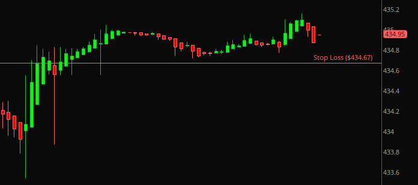

ATR essentially measures how much a given security moves during your employed time period. If you’re on the 1 minute time frame and ATR is 0.08, then the price of that security is moving about 8 cents per minute. If you’re still curious, Investopedia has a more in depth explanation.
Stop-loss = Price - (ATR * Risk Factor)
Take the current value of ATR and multiply it by 3, then subtract that number from the current price of the security. That’s your stop loss. I say 3 in this example but the risk factor is up to you. Somewhere between 2.5-3.5 is generally the specified factor of choice, however this can change depending on the volatility of the security. A security with greater volatility may require a larger risk factor since the price has a greater chance to make larger swings. Finally, be careful not to set your stop loss too close to the current price, or you risk activating your stop price prematurely.
Price: 434.95
ATR: 0.09
Risk factor: 3
Stop-loss: 434.95-(0.09*3) = 434.67
Here the price of SPY is $434.95. Using the current value of ATR at the time, 0.09, we get a stop loss of $434.67.
ATR allows you to set a more dynamic stop loss by taking a security’s current volatility into consideration. As a result, the indicator will help prevent getting stopped out of a trade prematurely while still inputting a certain level of protection into it.